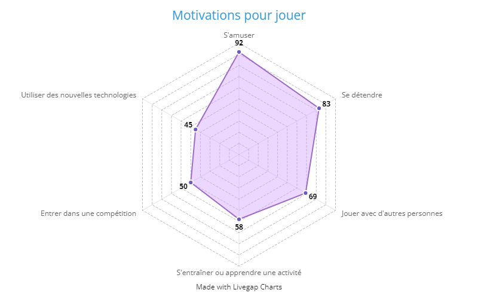

Les diagrammes et graphiques de cette page sont tous construits à partir des données collectés dans l’étude menés par le Syndicat des éditeurs de logiciels de loisirs (SELL) et la société Médiamétrie spécialisés dans la mesure d’audience et l’étude des usages des médias audiovisuels et numériques en France. Ces deux groupes ont mené ensemble une étude nommée les Français et le Jeu Vidéo qui a été réalisée sur Internet du 24 échantillon de 4001 internautes de 10 ans et plus.
Profil des joueurs et joueuses

Ce diagramme radar illustre clairement la diversité des âges des joueurs de jeux vidéo. S’il est vrai qu’une grande partie des moins de 25 jouent aux jeux vidéo, le graphique montre également que les autres tranches d'âges sont également concernées. 60 à 80% des personnes ayant entre 35 et 64 ans jouent aux jeux vidéo. Ce diagramme met en évidence la diversité des joueurs de jeux vidéo, démontrant ainsi que contrairement aux stéréotypes, les jeux vidéo ne sont pas uniquement destinés aux adolescents, mais attirent également des joueurs de toutes les tranches d'âges.
Ce diagramme donut montre que les femmes représentent une part importante des joueurs de jeux vidéo, avec 47% d'entre elles jouant régulièrement, soit une proportion proche de celle des hommes, qui s'élève à 53%. Ces données réfutent les préjugés qui présentent les jeux vidéo comme un loisir principalement masculin. Au contraire, les joueuses sont une composante essentielle de l'industrie du jeu vidéo et leur présence ne cesse de croître. Les développeurs de jeux prennent de plus en plus compte de cette diversité et proposent des expériences de jeu inclusives pour tous les publics.
Si tu fais partie des personnes qui pensent encore que les joueurs de jeux vidéo passent leur temps seuls, enfermés dans leur chambre, sans aucune vie sociale, ce diagramme va te faire changer d'avis ! En effet, en plus d’avoir une vie sociale comme les autres, les joueurs et joueuses ont en plus une vie sociale enrichie grâce à leurs jeux vidéo préférés. Plus de 50% des participant es du sondage ont rencontré physiquement d’autres joueurs ou joueuses, et 30 à 40% d’entre eux échangent en privé sur leurs réseaux sociaux. Les jeux vidéo participent à la sociabilisation des joueurs et joueuses en les rassemblant autour de passions et d’intérêts communs et divertissants.
Habitudes de jeu
Dans ce diagramme à barres classant les types de jeux vidéo préférés des joueurs et joueuses interrogés on peut y voir que contrairement aux idées reçus selon lesquelles les jeux vidéos sont des jeux violents, de guerre, de combats etc. le top 3 réflète une toute autre réalité. En effet, parmi les genres de jeux prisés on y trouve le casual gaming ou cosy gaming avec 36% des personnes interrogés qui y jouent, et à égalité les courses automobiles, les jeux de plateforme, et les jeux de rôle avec 24% de participation. Au final, on peut voir que les jeux de combat n’occupe pas une place importante dans le choix des joueurs et joueuses puisque seuls 11% des interrogés l’ont ajouté dans leurs genres de jeu favoris.
Ce diagramme radar met en évidence les six principales motivations des joueurs de jeux vidéo. Les résultats montrent que les deux motivations principales des joueurs sont de s'amuser, et de se détendre. Ces résultats soulignent donc que les jeux vidéo peuvent être un véritable moyen de relaxation pour les joueurs qui les aident à réduire leur niveau de stress, c’est notamment le cas pour le cosy gaming qui permet de se plonger dans un monde virtuel où l'on peut relâcher sa concentration, se changer les idées tout en étant confortablement installé chez soi. C'est une raison pour laquelle le cosy gaming est de plus en plus apprécié.Par ailleurs, il est important de noter que d'autres motivat ions, telles que l'apprentissage et l'entraînement, sont également fréquentes chez les joueurs, représentant ainsi un potentiel éducatif pour les joueurs et joueuses.